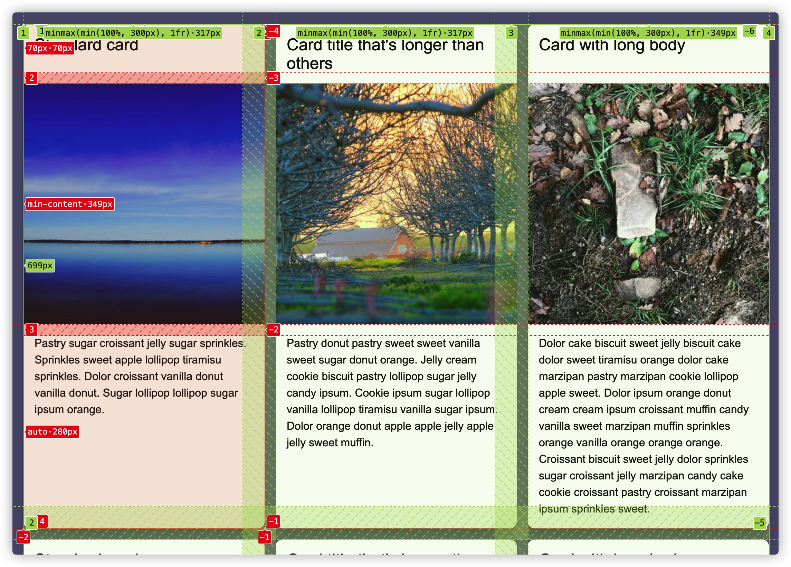

图解CSS: Grid布局（Part16）
作者：大漠 日期：2021-09-08 点击：270
特别声明：如果您喜欢小站的内容，可以点击申请会员进行全站阅读。如果您对付费阅读有任何建议或想法，欢迎发送邮件至: airenliao@gmail.com!或添加QQ：874472854(^_^)
* 文本为付费内容（4.99元），您已获得全文阅读权限
subgrid 进入 CSS Grid 布局模块的 Level 2 规范之前，嵌套网格、subgrid 和 display: contents 就有深度的讨论，最终 subgrid 得到更多的支持，也最终成为规范中的一部分。也就是说，嵌套网格 和 display: contents 都可以实现类似 subgrid 的布局。那这一节中，和大家来探讨 display: contents 和 subgrid 有何差异？
display: contents
CSS 的 display 属性 并不是 CSS 网格布局模块中的特性，它是 CSS Display Module Level 3 中 display 属性新增的一个属性值 contents。 从 CSS 盒模型 中可以知道文档树中的每个元素都是一个矩形框（盒子）。广义上讲，这个”矩形框“由两部分组成。首先，我们有实际的盒子，由border、padding和margin区域组成；其次，我们有盒子的内容，即内容区域：
通过 CSS 的 display 属性，我们可以控制这个盒子及其后代元素以不同的上下文格式（即，产生不同的视觉格式化模型）在浏览器中渲染。每个格式化上下文都拥有自己不同的渲染规则，而这些规则是用来决定其子元素如何定位，以及和其他元素的关系。好比水倒进不同的器皿中，会有不同的形态：
比如，display 值为 inline 会产生一个 IFC、block 会产生一个 BFC、flex（或 inline-flex）会产生一个 FFC 和 grid（或 inline-grid）会产生一个 GFC。
display 属性还有两个值，用来控制标记中定义的元素是否产生一个盒子：
none值将导致盒子或其内容在页面上不被绘制contents值将导致盒子的内容被正常绘制，但周围的盒子被完全忽略
display: contents 是什么？
W3C规范是这样描述 display 的 contents 值：
显式设置
display属性值为contents的元素自身不会产生任何盒子，但它的子元素和伪元素仍会产生盒子，文本运行也正常。对于盒子的生成和布局，该元素必须被视为在元素树中被其内容所取代（包括其源文件的子元素和伪元素，比如::befoe和::after伪元素，它们在该元素的子元素之前（或之后正常生成））。
简单地说，display 为 contents 时允许你以某种方式从盒子树（Box Tree）中移除一个元素，但仍保留其内容。
注意，由于只有盒子树受到影响，任何基于文档树的语义，如选择器匹配、事件处理和属性继承，都不会受到影响。但它也会阻止可访问性工具（比如屏幕阅读器）访问该元素的语义。
使用 display: contents 时会发生什么
理解使用 diplay: contents 时会发生什么的最简单方法是 想象元素的开始和结束标签被从标记中省略。严格地说，对于盒子的生成和布局，该元素必须被视为在元素树中被其内容所取代。
我们通过下面的示例来阐述可能更易于大家理解。假设我们有一个类似下面这样的 HTML 结构：
<!-- HTML -->
<section>
我是 section 元素的文本节点（文本内容）
<p>我是一个 p 元素，同时是 section 元素的子元素</p>
</section>
分别给 section 和 p 元素添加一点 CSS 规则：
section {
border: 6px solid #f44336;
padding: 2rem;
background-image: linear-gradient(to right, #09f, #90f);
text-shadow: 1px 1px 0 rgb(0 0 0 / .85);
filter: drop-shadow(8px 8px 1px rgb(0 0 0 / .85));
}
p {
background-color:#607d8b;
padding: 2rem 1rem;
font-size: 80%;
color: #cddc39;
}
你将看到下图这样的效果：
如果你显式在 section 设置 display 属性值为 contents：
section {
display: contents;
}
此时，section 上的所有样式规则看上去都失效了，只留了文本内容和它的子元素。
如果section有个父元素，设置display: contents 的 section 渲染，就有点像是其父元素伪元素生成了内容（伪元素上无任何样式）：
<!-- HTML -->
<div class="container">
<section>
我是 section 元素的文本节点（文本内容）
<p>我是一个 p 元素，同时是 section 元素的子元素</p>
</section>
</div>
切换示例中display的值效果如下：
也可以理解成，section 的 display: contents时，相当于section标签没有了：
<!-- HTML -->
我是 section 元素的文本节点（文本内容）
<p>我是一个 p 元素，同时是 section 元素的子元素</p>
display:contents 边缘情况和特殊行为
display: contents 使用起来很简单，但有很多边缘情况和特殊行为需要注意。我们必须记住， display: contents 只影响页面上视觉上绘制的盒子，它不影响文档中的标记。
display: contents 的元素仅影响视觉上的盒子，但元素上的属性并不受影响，比如：
<!-- HTML -->
<div id="label" style="display: contents;">Label here!</div>
<button aria-labelledby="label"><button>
<button> 上的 aria-labelledby 和 label 还是具有相应的绑定关系。当屏幕阅读器在<button>是得到焦点时，会朗读出id="label"元素的内容，即”Label here!“。
带有 display: contents的元素的JavaScipt事件不会受影响，比如：
<!-- HTML -->
<section id="contents" style="display: contents">我是一个contents</section>
<script>
const contentsEle = document.getElementById("contents");
contentsEle.addEventListener("click", (etv) => {
alert(etv.target.textContent);
});
</script>
同样的，带有 display: contents 的元素的伪元素会被认为是其子元素的一部分，同样能正常显示：
.contents {
border: 6px solid #f44336;
padding: 2rem;
background-image: linear-gradient(to right, #09f, #90f);
text-shadow: 1px 1px 0 rgb(0 0 0 / 0.85);
filter: drop-shadow(8px 8px 1px rgb(0 0 0 / 0.85));
transition: all 0.28s ease-in-out;
display: contents;
}
.contents::before {
content: 'Before »';
color: red;
}
.contents::after {
content: '~ After';
color: #0ff;
}
在来看一些特殊场景。即 表单元素、图像 和 其他被替换的元素 上设置了 display: contents 会有不同的表现行为。
在 CSS 中，试图给被替换元素（比如 <img>） 移除盒子其实是没有意义的，因为它并不完全清楚 ”盒子“ 是什么。对于这些元素，display: contents 和 display: none 完全一样。整个盒子和元素的内容根本不在页面上显示。
切换示例中的单选按钮，效果如下：
被替换的元素是指一些元素，比如
<img>，其外观和盒子是由外部资源控制的。
从Web开发者角度来看，许多表单元素并不是由一个单一的”盒子“组成的，但对于浏览器引擎而言，它们是由几个较小的元素组成的。与被替换元素相似，删除盒子也没有意义，因为并没有一个盒子。因此，对于像 <select>、<input>、<textarea> 这些表单元素，display:contents 和 dispaly: none一样。
正如示例所示，<button> 、<summary> 和 <fieldset>只移除视觉效果，内容还留着；而其他表单元素表现和display:none一样：
对于链接 <a> 来说，有点类似于 <button> 元素，元素周围的盒子被视觉化地移除，留下链接的内容。由于属性通常不受这个 CSS 规则的影响，链接仍然可以正常工作，并且可以像正常一样用来导航。
在 HTML中，<br>、<wbr>、<meter>、<progress>、<canvas>、<embed>、<object>、<audio>、<iframe>、<img>、<video>、<frame>、<frameset>、<input>、<textarea> 和 <select> 等元素设置为 display: contents 时和 display: none 相同。
HTML 中的 <legend> 不是一个已渲染的图例，因此，是否设置display: contents，它的表现都是正常的。
<button>、<details> 和 <fieldset> 这些元素没有任何特殊的行为，设置display为contents只是移除它们的主框（视觉框），而它的内容则正常表现。
其他 HTML 元素的display: contents表现都很正常。
除此之外，<svg>元素，display: contents 会被计算为 display: none；<use>元素使用display:contents时，会将该元素从格式化树中剥离，并将共内容提升到显示位置。还要注意的是，任何其他 SVG 元素，display: contents 都会计算成 display: none。
使用display: contents 模拟subgrid布局
上图的效果，可以使用 嵌套网格 和 subgrid 来实现：
每张卡片都有一个”标题“，”缩略图“和”描述文本“三个部分组成：
<!-- HTML -->
<div class="card">
<h2>Standard card</h2> <!-- ① 标题 -->
<img src="https://picsum.photos/400?random=1" alt="" /> <!-- ② 缩略图 -->
<p>Pastry ...</p> <!-- ③ 描述文本 -->
</div>
把很多个div.card放在一个网格容器中，比如：
<!-- HTML -->
<div class="grid__container"> <!-- 网格容器 -->
<div class="card">
<h2>Standard card</h2> <!-- ① 标题 -->
<img src="https://picsum.photos/400?random=1" alt="" /> <!-- ② 缩略图 -->
<p>Pastry ...</p> <!-- ③ 描述文本 -->
</div>
</div>
CSS 网格布局最大的优势之一就是 网格项目可以根据网格线编号放置任意想放置的位置。可以尽可能避免使用一些 HTML 标签元素。而 display: contents 的作用之一就是可以移除它所应用的元素的框。也就是说，如果你有一个为语义而非视觉目的而所需的元素，并且希望它的子元素参与到网格或Flexbox布局中，就很有用。
就上图卡片的效果，就可以使用display: contents 来实现，即 模拟subgrid布局效果。在开始介绍display: contents模拟subgrid布局之前，先来回忆前面的 嵌套网格 和 *subgrid。
使用嵌套网格。首先会在网格容器上定义列网格轨道：
body {
display: grid;
grid-template-columns: repeat(auto-fit, minmax(min(100%, 300px), 1fr));
gap: 1rem;
}
每个div.card就是一个嵌套网格（子网格），这个网格是一个 1 x 3（一列三行）：
.card {
display: grid;
grid-template-rows: 70px min-content auto;
gap: 1rem;
}
这样一来，每个.card都创建了一个独立的网格：
在 CSS 网格系统中，嵌套网格中的两个网格（即父网格和子网格是两个独立的网格），子网格不会继承父网格任何参数，比如网格轨道，网格线，网格沟槽等：

嵌套网格有明显的布局缺陷，那就是子网格的轨道尺寸变化时，父网格无法自动感知到，比如上面示例，我们在标题所在行轨道（第一行行轨道）定死了高度为70px，如果标题内容高度大于预置的70px时，会打破整个网格布局，内容会溢出：
效果如下：
subgrid的出现，让事情变得更简单了。子网格上的grid-template-rows和grid-template-columns可以设置subgrid值。这样一来，子网格可以继承父网格轨道尺寸、网格线和网格沟槽等。并且，子网格的网格轨道尺寸改变可以直接调整其父网格。上面的示例，我们使用subgrid可以这样来实现：
body {
display: grid;
grid-template-columns: repeat(auto-fit, minmax(min(100%, 300px), 1fr));
gap: 1rem;
}
.card {
display: grid;
grid-template-rows: subgrid;
grid-row: span 3;
}
整个效果如下：
我们再来看 display: contents 模拟 subgrid 的网格布局效果。众所周知，带有display为grid（或 inline-grid）的元素被称为网格容器，其子元素被称为网格项目：
body {
display: grid;
grid-template-columns: repeat(auto-fit, minmax(min(100%, 300px), 1fr));
gap: 1rem;
}
如果我们在.card 显式设置display: contents时，那么 div.card 就不再是网格项目了，而.card容器的所有子元素就变成网格项目了：
.card {
display: contents;
}
如此一来，就需要对每个.card的子元素，显式使用 grid-row、grid-column 或 grid-area 来放置网格项目，比如：
.card:nth-child(1) h2 {
grid-area: 1 / 1 / 2 / 2;
}
.card:nth-child(1) img {
grid-area: 2 / 1 / 3 / 2;
}
.card:nth-child(1) p {
grid-area: 3 / 1 / 4 / 2;
}
.card:nth-child(2) h2 {
grid-area: 1 / 2 / 2 / 3;
}
.card:nth-child(2) img {
grid-area: 2 / 2 / 3 / 3;
}
.card:nth-child(2) p {
grid-area: 3 / 2 / 4 / 3;
}
.card:nth-child(3) h2 {
grid-area: 1 / 3 / 2 / 4;
}
.card:nth-child(3) img {
grid-area: 2 / 3 / 3 / 4;
}
.card:nth-child(3) p {
grid-area: 3 / 3 / 4 / 4;
}
可以看得出来，虽然效果上看上去模拟出subgrid的效果。你也可能发现其中的缺陷了，卡片越多，我们需要的代码就会越多。除此之外，display: contents 模拟的subgrid效果是不具任何响应式的效果。比如上面的示例，屏幕尺寸调整之后，整个布局的缺陷就展现出来了：
正如上面示例所示，有了 display: contents，你可以把网格容器的孙子元素放在网格上。这允许更多的语义标签，这对Web可访问性是有益的。你的标记越有语义，屏幕阅读器这样的辅助技术能为用户提供更多的细节。然而，有一个注意事项，目前支持display: contents 的浏览器都没有将具有该属性的元素暴露在无障碍树上，并保留其原有角色。
虽然，display: contents 能模拟出 subgrid 的效果，但并不代表着display: contents就能和subgrid一样。如果不考虑代码的冗余，不考虑其响应式的能力，在subgrid还未得到更多浏览器支持的时候，可以考虑用其来模拟。但个人并不建议任何情景之下都采用display: contents 来模拟subgrid。